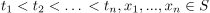
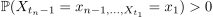
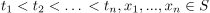
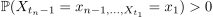

Markovkette
1. Definition
Ein stochastischer Prozess mit diskreter Zeit und endlichem Zustandsraum  heißt Markovkette, genau dann wenn für alle
heißt Markovkette, genau dann wenn für alle  und  mit  gilt
und  mit  gilt
 1
1
"Für Aussage über die Zukunft reicht uns die Gegenwart aus, die Vergangenheit liefert keine zusätzlichen Informationen"